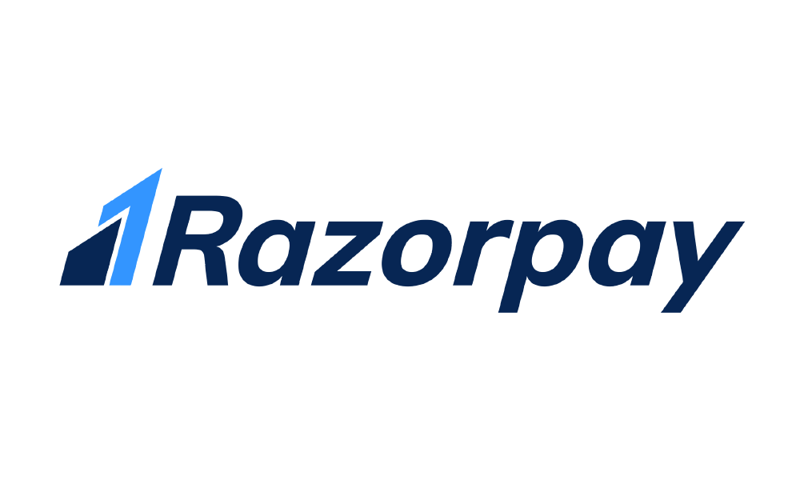

For a long time, we have felt that enabling frictionless transactions is a major problem and nobody seems to be
doing it right. We decided to tackle it ourselves. Founded by IIT Roorkee alumni, Razorpay aims to revolutionize
money management for online businesses by providing clean, developer-friendly APIs and hassle-free integration. We
offer a fast, affordable and secure way for merchants, schools, ecommerce and other companies to accept and
disburse payments online, own a fully-functional current account and avail working capital loans.